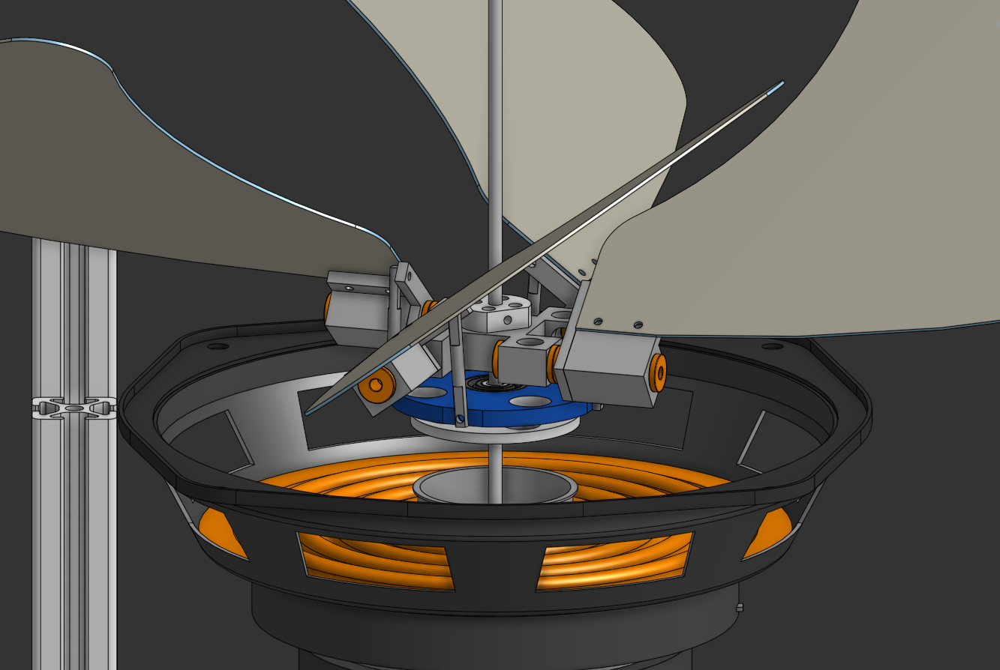
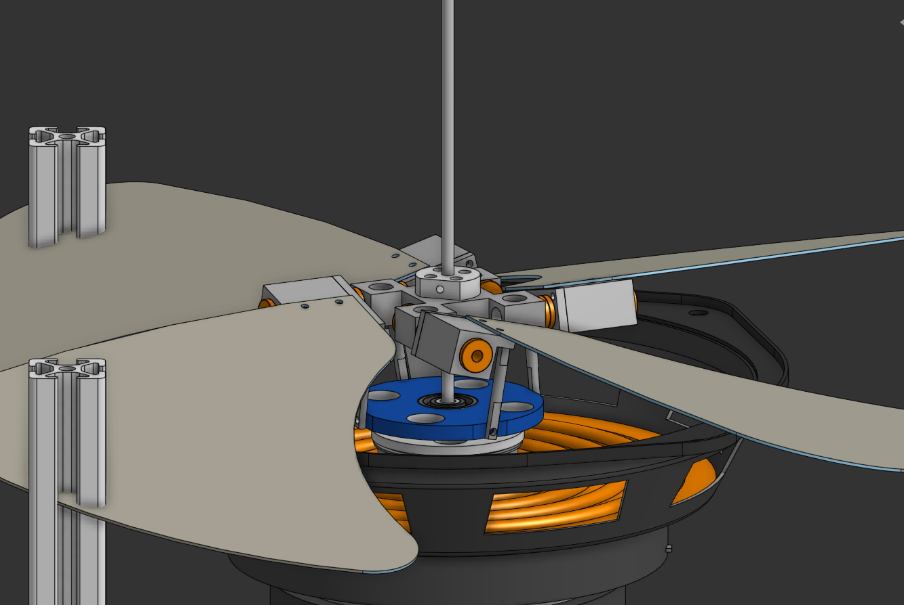
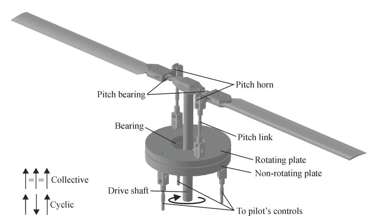
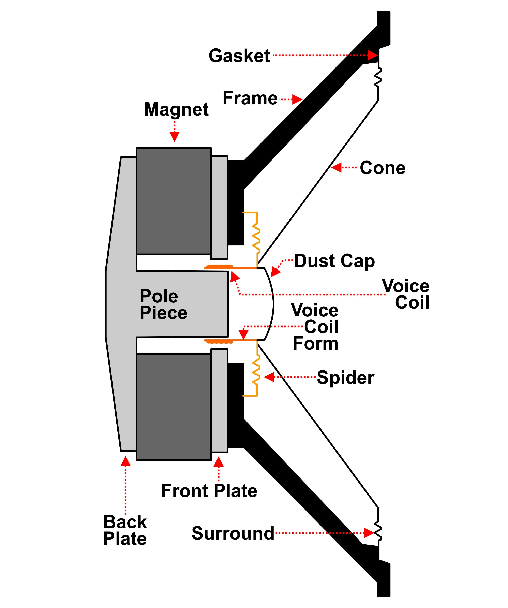
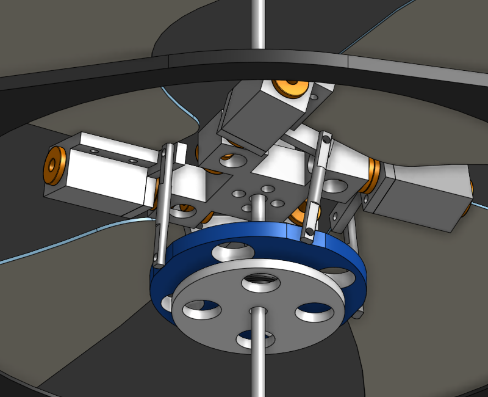
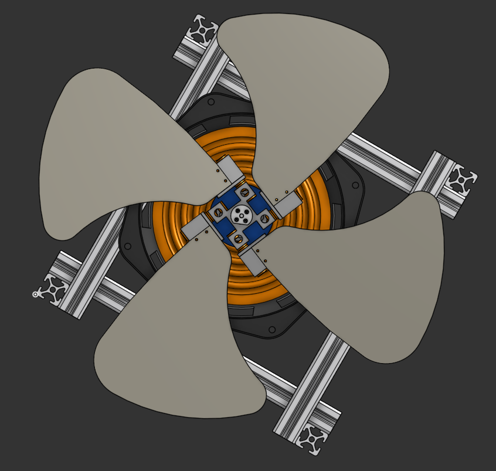

January 24, 2025
Actually writing this in late 2026 as I put together the blogs on my website. I have made no progress on this project since the above date, but if I do return to it I'll know exactly where I left off.
A rotary subwoofer is a special type of speaker that uses flapping fan blades to create exceptionally powerful low-frequency acoustic vibration. I wouldn't even say 'sound' here necessarily because its bandwidth is often below that of human hearing. But when people build these things, the effect is crazy. It's able to move an immense amount of air very quickly, and I've seen videos of all the doors in a house opening and closing every second. They're often mounted in house window frames because of the backvolume of air they need.

Imagine a normal fan spinning in one direction, its blades angled one way to deflect air and push it in a direction; DC air. If we flip the angle of deflection while keeping the motor spinning the same way, the air now flows the other way; negative DC air. Now let's change the angle of deflection of the blades back and forth, and now the air flows one way and then the other; AC air, which is sound! The systems I've seen to do this use a large transducer with its cone removed to control the angle of the blades, while a shaft runs through the middle of the transducer to a motor.


I was interested in this project originally as a potential senior project. There are a number of hobbyists that have experimented with it, but never in an academic or research setting. Very little about them has been measured, and very few experiments have been conducted to explore their limits. There are a lot of potential avenues to explore with researching rotary subwoofers, including:
- Upper frequency limits
- Lower frequency limits
- Frequency Response
- Blade design
- Blade count
- Maximum Blade Deflection Angle
- Mechanical Noise Control
- Optimal Motor Speed
- Optimal Transducer Design
- Optimal Transducer Input Signal
- Baffle and Backvolume Design
The construction of these things is really weird, and actually has a lot in common with helicopters! The transducer connects to a swashplate, a disk that rides up and down the main shaft. Small arms called linkages connect from the swashplate to the blades, which are rotated about an axle on a hub. It took a lot of time to wrap my head around how to pass a rotating axle through a transducer, and then I realized that many transducers have a hole in their base as an acoustic port.



I built some of the components you see in the CAD drawings, but then I got the job at Frontier Audio Labs and haven't touched this since.
